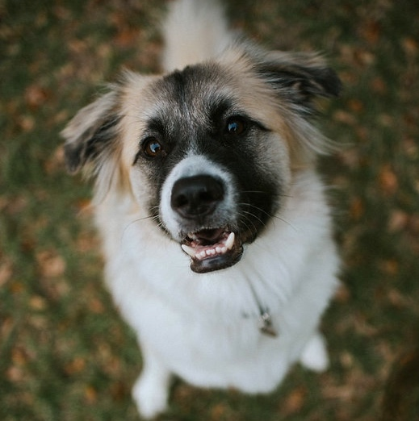

About
Currently a Nashvillian designer crafting human-centric experiences and eating a lot of hot chicken.
While I prefer cooler temps and mountainous ventures, I was
born & raised in the Tampa suburb, Safety Harbor. Yes I am a
die-hard Bolts fan
and no I do not like the beach.
I love traveling. It’s in the nature of an eager,
never-ending learner to travel and explore new places.
Understanding other humans is hard. It's complex. But it
rarely happens from the comfort of your own home. The more I
travel, the greater perspective I am able to gain.



Captivated by design and its impact on everyday life, I am
passionate about humanizing the digital realm. The beauty of
UX, in my belief, is the never-ending ingression of
knowledge. I am eager to learn which has been a beneficial
guide to solving digital problems and producing intuitive
user experiences.
My favorite technical hobby is
photography. I photograph memorable moments,
puppies
and nature. The puppies are always the best.
UX for a Fortune 50 Company
HCA Healthcare Careers Site
Crafting a personalized impression of one the world's leading healthcare companies, HCA Healthcare.
UX Design in Healthcare
Working at HCA Healthcare
As a UX designer in healthcare, I get second-hand experiences from the front lines and internal colleagues. I also get to help manage our in-house design system that populates HCA's 5,000-person IT organization.
UX Design & Front-End Development
Save the Sea Turtles Foundation
A site refactor for a passionate organization that works tirelessly to support & protect sea turtles along with other marine life.
Cross-Platform UX Design
Clusterizr
Connecting UCF's own student & alum to local industry professionals while strengthening networks and creating opportunity.